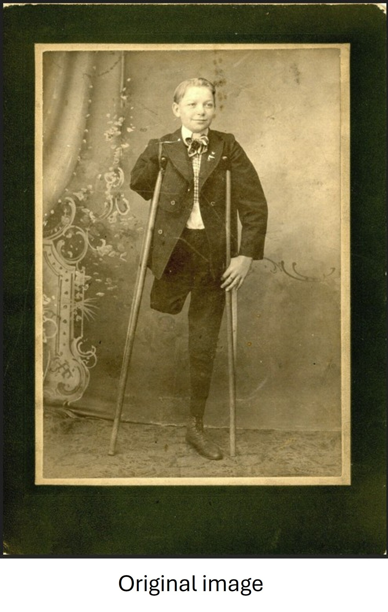
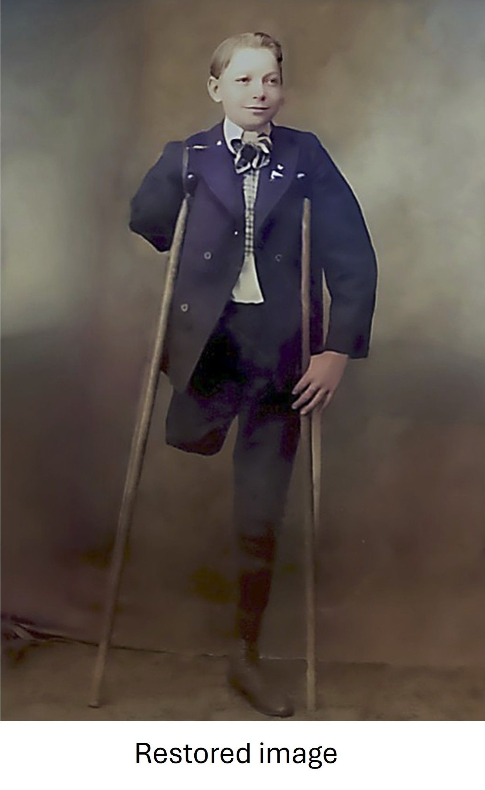

Digital Photo Restoration
A Bootstrap comparison layout highlighting before-and-after restoration work completed in Adobe Photoshop.
This project demonstrates the restoration of a vintage photograph by correcting exposure, removing visible damage, and improving clarity while preserving the original character of the image.
Before
Original Photo

Issues included scratches, dust, fading, and reduced contrast.
After
Restored Photo

Techniques included healing brush work, clone stamp cleanup, and level adjustments.